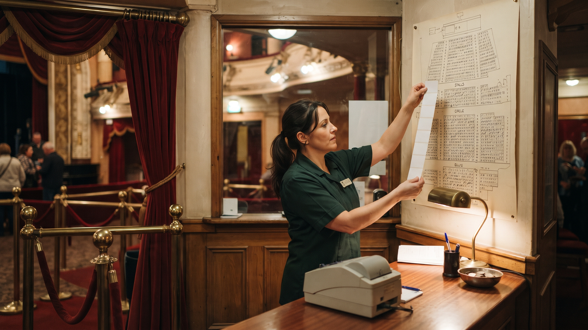

chv-serviceaccountprivilegechecker
The Box Office. A command line validator that checks a service account configuration file against a JSON schema the user supplies, and reports every place the configuration breaks that schema. Each strip of tickets is checked against the seating plan the house drew, and this house wrote no plan of its own: the tool ships with no privilege rules at all.

InvocationConfiguration first, schema second; both are required positionals
FormatDecided by file extension: .yaml, .yml, or .json; any other extension is rejected as unsupported
ReportEvery failure collected in one pass, each with its message and its path joined by dots
ExitsValidation errors exit 1, and a failed report write is treated as a failure of the run in its own right
Usage
python3 main.py CONFIG SCHEMA [-l LEVEL] [-o REPORT]
The README's preserved parameter list omits both required positionals, and its usage line is a placeholder that runs nothing; the working invocation stands in the README's flagged completion section, taken from the parser in main.py.
| Argument | What it does |
|---|---|
config_file | Required positional: the path to the configuration file, YAML or JSON. |
schema_file | Required positional: the path to the JSON schema file to validate against. |
-l, --log_level | Sets the logging level: DEBUG, INFO, WARNING, ERROR, or CRITICAL. INFO is the default. |
-o, --output_file | The path to the output file for the report. Optional; the report is printed when no file is given. |
-h | Show help message and exit. |

Stated limits
- The privilege half of the name is empty: the tool ships with no built in list of allowed or forbidden privileges at all, so privilege limits exist only if the supplied schema encodes them, for example by listing the allowed permission values in an enum. With a schema that only checks that fields are present, a configuration granting admin, root, and sudo passes as valid.
- The schema chooses its own dialect through its $schema key, while a schema without one is judged by the newest draft the library knows, and the report never says which dialect did the judging.
- A failure at the document root has an empty path, so the report prints a blank after Path for exactly the errors that describe the file as a whole.
- The check is static and file based, with no runtime monitoring and no inspection of any platform, whatever the repository description's cross platform privilege identification phrasing suggests.